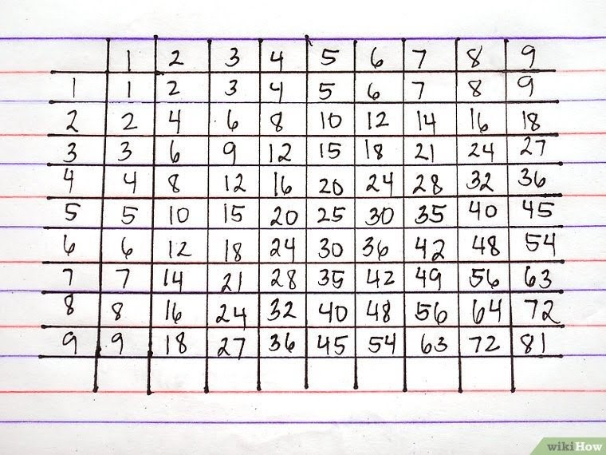

ابدأ بالأسهل وأمهل نفسك وقتًا مناسبًا. لا تصدم نفسك في البداية بمحاولة إيجاد
ناتج "235 × 958,7"، فإذا كنت تستطيع حل مسألة كهذه بالفعل في عقلك، فأنت
لا تحتاج لقراءة هذه المقالة! ابدأ بمسائل جمع وطرح أسهل حتى لو كنت تشعر أنها
أقل من مستواك، بهدف أن تتأكد أنك تستطيع حلها بسرعة.
